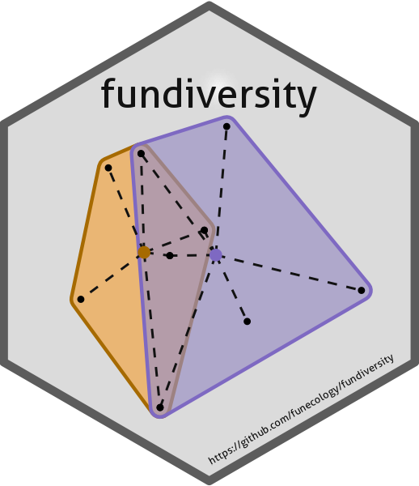

2. Parallelize Computation of Indices
Source:vignettes/fundiversity_1-parallel.Rmd
fundiversity_1-parallel.RmdNote: This vignette presents some performance tests ran between
non-parallel and parallel versions of fundiversity
functions. Note that to avoid the dependency on other packages, this
vignette is pre-computed.
Within fundiversity the computation of most indices can
be parallelized using the future package. The goal of this
vignette is to explain how to toggle and use parallelization in
fundiversity. The functions that currently support
parallelization are summarized in the table below:
| Function Name | Index Name | Parallelizable1 | Memoizable2 |
|---|---|---|---|
fd_fric() |
FRic | ✅ | ✅ |
fd_fric_intersect() |
FRic_intersect | ✅ | ✅ |
fd_fdiv() |
FDiv | ✅ | ✅ |
fd_feve() |
FEve | ✅ | ❌ |
fd_fdis() |
FDis | ❌ | ❌ |
fd_raoq() |
Rao’s Q | ❌ | ❌ |
Note that memoization and parallelization cannot be used at
the same time. If the option fundiversity.memoise
has been set to TRUE but the computations are parallelized,
fundiversity will use unmemoised versions of functions.
The future package provides a simple and general
framework to allow asynchronous computation depending on the resources
available for the user. The first vignette of
future gives a general overview of all its features.
The main idea being that the user should write the code once and that it
would run seamlessly sequentially, or in parallel on a single computer,
or on a cluster, or distributed over several computers.
fundiversity can thus run on all these different backends
following the user’s choice.
library("fundiversity")
data("traits_birds", package = "fundiversity")
data("site_sp_birds", package = "fundiversity")Running code in parallel
By default the fundiversity code will run sequentially
on a single core. To trigger parallelization the user needs to define a
future::plan() object with a parallel backend such as
future::multisession to split the execution across multiple
R sessions.
# Sequential execution
fric1 <- fd_fric(traits_birds)
# Parallel execution
future::plan(future::multisession) # Plan definition
fric2 <- fd_fric(traits_birds) # The code resolve in similar fashion
identical(fric1, fric2)
#> [1] TRUEWithin the future::multisession backend you can specify
the number of cores on which the function should be parallelized over
through the argument workers, you can change it in the
future::plan() call:
future::plan(future::multisession, workers = 2) # Only 2 cores are used
fric3 <- fd_fric(traits_birds)
identical(fric3, fric2)
#> [1] TRUETo learn more about the different backends available and the related
arguments needed, please refer to the documentation of
future::plan() and the overview vignette of
future.
Performance comparison
We can now compare the difference in performance to see the performance gain thanks to parallelization:
future::plan(future::sequential)
non_parallel_bench <- microbenchmark::microbenchmark(
non_parallel = {
fd_fric(traits_birds)
},
times = 20
)
future::plan(future::multisession)
parallel_bench <- microbenchmark::microbenchmark(
parallel = {
fd_fric(traits_birds)
},
times = 20
)
rbind(non_parallel_bench, parallel_bench)
#> Unit: milliseconds
#> expr min lq mean median uq max neval
#> non_parallel 6.353103 6.530705 7.048172 6.783957 7.419328 8.047106 20
#> parallel 58.655666 60.348733 98.017574 64.985843 67.026148 742.737245 20The non parallelized code runs faster than the parallelized one!
Indeed, the parallelization in fundiversity parallelize the
computation across different sites. So parallelization should be used
when you have many sites on which you want to compute similar
indices.
# Function to make a bigger site-sp dataset
make_more_sites <- function(n) {
site_sp <- do.call(rbind, replicate(n, site_sp_birds, simplify = FALSE))
rownames(site_sp) <- paste0("s", seq_len(nrow(site_sp)))
site_sp
}For example with a dataset 5000 times bigger:
bigger_site <- make_more_sites(5000)
microbenchmark::microbenchmark(
seq = {
future::plan(future::sequential)
fd_fric(traits_birds, bigger_site)
},
multisession = {
future::plan(future::multisession, workers = 4)
fd_fric(traits_birds, bigger_site)
},
multicore = {
future::plan(future::multicore, workers = 4)
fd_fric(traits_birds, bigger_site)
}, times = 20
)
#> Unit: seconds
#> expr min lq mean median uq max neval
#> seq 18.728512 19.103694 19.232935 19.176466 19.301487 19.761445 20
#> multisession 10.094391 10.395965 13.815399 15.532990 15.817894 15.971519 20
#> multicore 5.591176 5.859922 5.969892 5.940668 6.049153 6.460862 20Session info of the machine on which the benchmark was ran and time it took to run
#> seconds needed to generate this document: 787.217 sec elapsed
#> ─ Session info ────────────────────────────────────────────────────────────────────────
#> setting value
#> version R version 4.5.3 (2026-03-11)
#> os Ubuntu 24.04.4 LTS
#> system x86_64, linux-gnu
#> ui Positron
#> language (EN)
#> collate en_GB.UTF-8
#> ctype en_GB.UTF-8
#> tz Europe/Berlin
#> date 2026-03-30
#> pandoc 3.1.3 @ /bin/pandoc
#> quarto 1.9.12 @ /opt/quarto/bin/quarto
#>
#> ─ Packages ────────────────────────────────────────────────────────────────────────────
#> package * version date (UTC) lib source
#> abind 1.4-8 2024-09-12 [1] RSPM (R 4.5.0)
#> cachem 1.1.0 2024-05-16 [1] RSPM (R 4.5.0)
#> cli 3.6.5 2025-04-23 [1] RSPM (R 4.5.0)
#> codetools 0.2-20 2024-03-31 [2] CRAN (R 4.5.3)
#> digest 0.6.39 2025-11-19 [1] RSPM
#> evaluate 1.0.5 2025-08-27 [1] RSPM (R 4.5.0)
#> fastmap 1.2.0 2024-05-15 [1] RSPM (R 4.5.0)
#> fundiversity * 1.1.1.9000 2026-03-29 [1] local
#> future * 1.69.0 2026-01-16 [1] RSPM (R 4.5.0)
#> future.apply 1.20.2 2026-02-20 [1] RSPM (R 4.5.0)
#> geometry 0.5.2 2025-02-08 [1] RSPM
#> globals 0.19.0 2026-02-02 [1] RSPM (R 4.5.0)
#> knitr 1.51 2025-12-20 [1] RSPM (R 4.5.0)
#> lattice 0.22-9 2026-02-09 [2] CRAN (R 4.5.3)
#> listenv 0.10.0 2025-11-02 [1] RSPM (R 4.5.0)
#> magic 1.6-1 2022-11-16 [1] RSPM
#> Matrix 1.7-4 2025-08-28 [2] CRAN (R 4.5.3)
#> memoise 2.0.1 2021-11-26 [1] RSPM (R 4.5.0)
#> microbenchmark 1.5.0 2024-09-04 [1] RSPM
#> otel 0.2.0 2025-08-29 [1] RSPM
#> parallelly 1.46.1 2026-01-08 [1] RSPM (R 4.5.0)
#> Rcpp 1.1.1 2026-01-10 [1] RSPM (R 4.5.0)
#> rlang 1.1.7 2026-01-09 [1] RSPM (R 4.5.0)
#> sessioninfo 1.2.3 2025-02-05 [1] RSPM (R 4.5.0)
#> tictoc 1.2.1 2024-03-18 [1] RSPM
#> xfun 0.56 2026-01-18 [1] RSPM (R 4.5.0)
#>
#> [1] /home/hgruson/.local/share/R/x86_64-pc-linux-gnu-library/4.5
#> [2] /opt/R/4.5.3/lib/R/library
#> * ── Packages attached to the search path.
#>
#> ───────────────────────────────────────────────────────────────────────────────────────